A fall gift basket works for almost any occasion the season brings, Thanksgiving, a fall birthday, a thank-you, or simply because.
The theme, the base items, and the way it is styled all matter more than the price tag ever does.

Advanced Touches Worth Trying
Building the basket around a scent story, a candle and a few items that share its notes, creates a more cohesive sensory experience than visuals alone.
Including something homemade, even one small item, adds a layer of effort that store-bought contents alone cannot replicate.
Keeping It Budget-Friendly
Buying a few items in bulk and splitting them across multiple baskets cuts the per-basket cost significantly for anyone gifting several at once.
A thrifted or repurposed base works just as well as a new one, especially once it is filled and styled.
Creative Extras Worth Adding
A small seasonal object, a mini pumpkin, a bundle of cinnamon sticks, a tiny succulent, adds a detail that elevates the whole basket past its individual items.
Styling and Presenting It Like a Pro
Wrapping it in clear cellophane or a sheer wrap, finished with a simple ribbon, keeps the presentation clean without hiding the contents.
A handwritten note or one genuinely personal item is what separates a thoughtful basket from a purely decorative one.
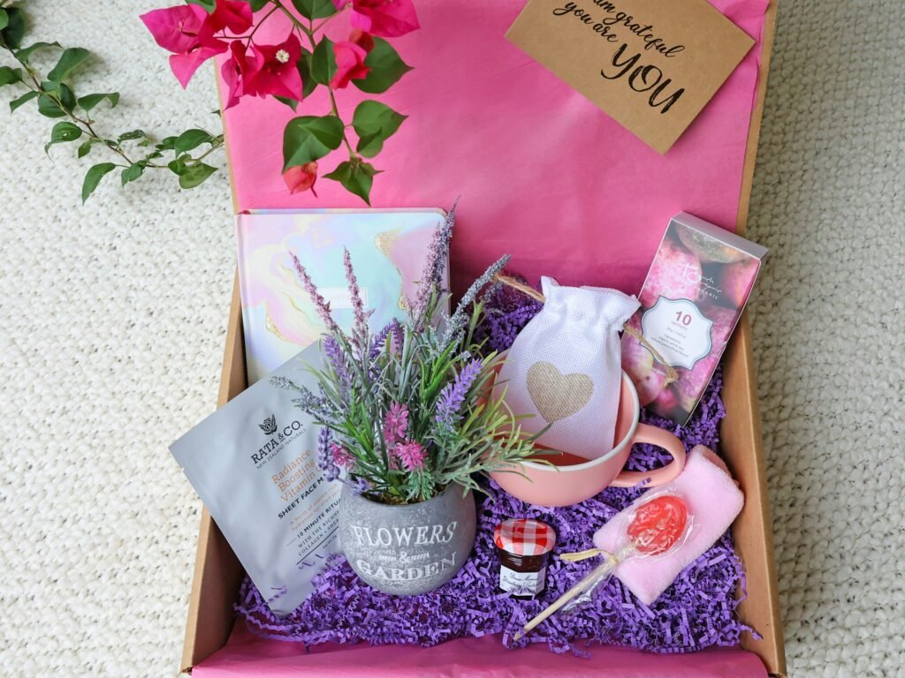
A consistent color palette across the items and wrapping ties the whole thing together more than any single expensive item could.
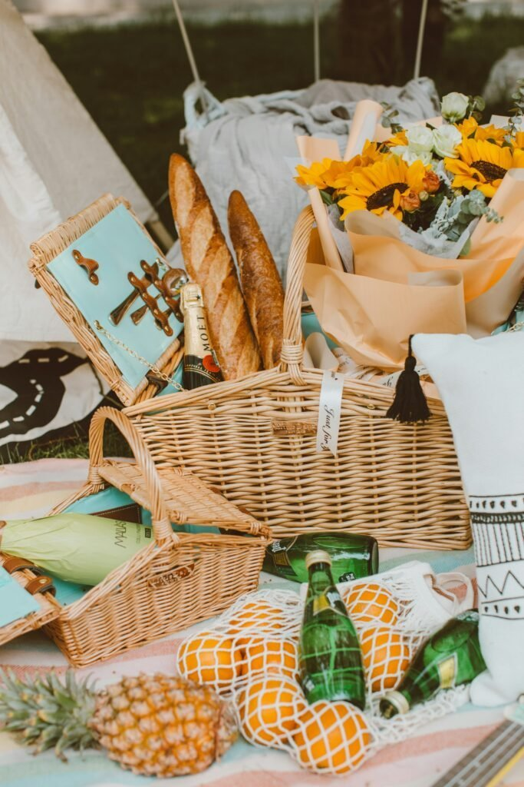
Layering items by height, rather than placing everything flat, gives the finished basket real visual depth.
The base, a real basket, a crate, or even a simple box, sets the whole tone before a single item goes inside.
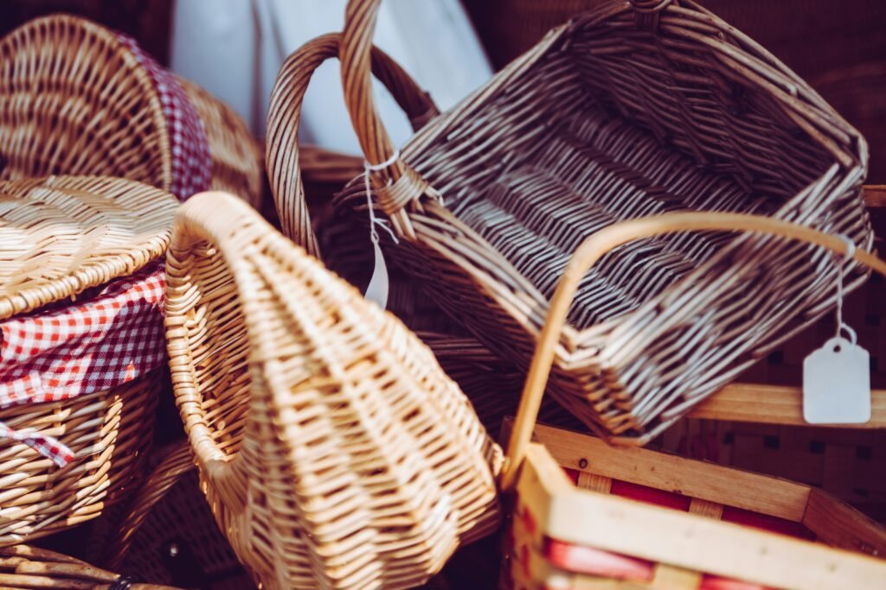
Fall Gift Baskets for Every Occasion
A just-because basket has the most creative freedom of all, since there is no occasion-specific expectation shaping what goes inside.
A corporate or thank-you basket should stay professional and broadly appealing, since it is less personal by nature than a gift for a close friend.
A fall wedding basket works best leaning elegant and polished, think refined packaging over anything too casual or rustic.
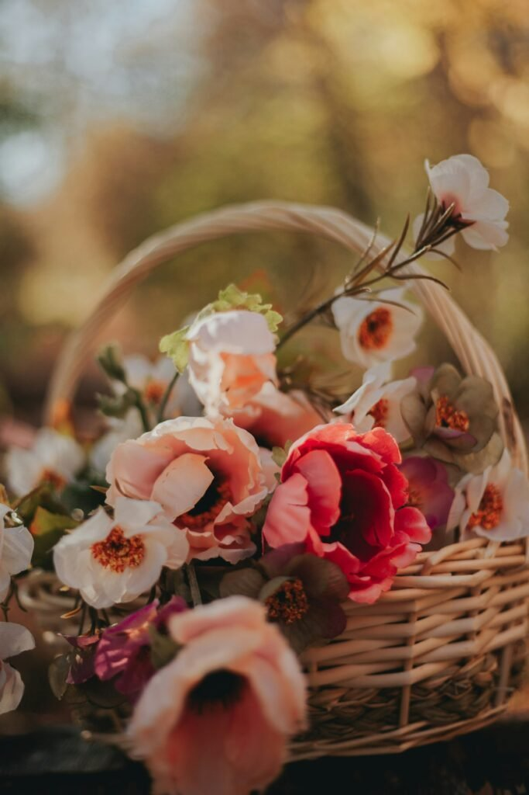
A fall birthday basket can lean more personal and playful, built around the recipient's specific tastes rather than the season alone.
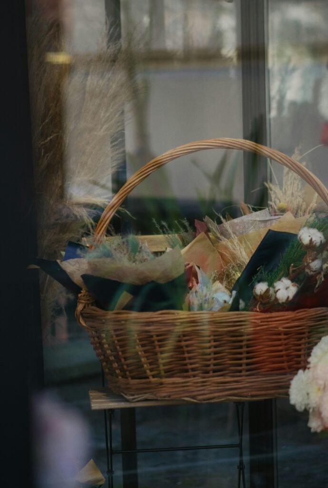

A Thanksgiving basket leans into warm, communal flavors, think spiced treats and something meant to be shared at a table.
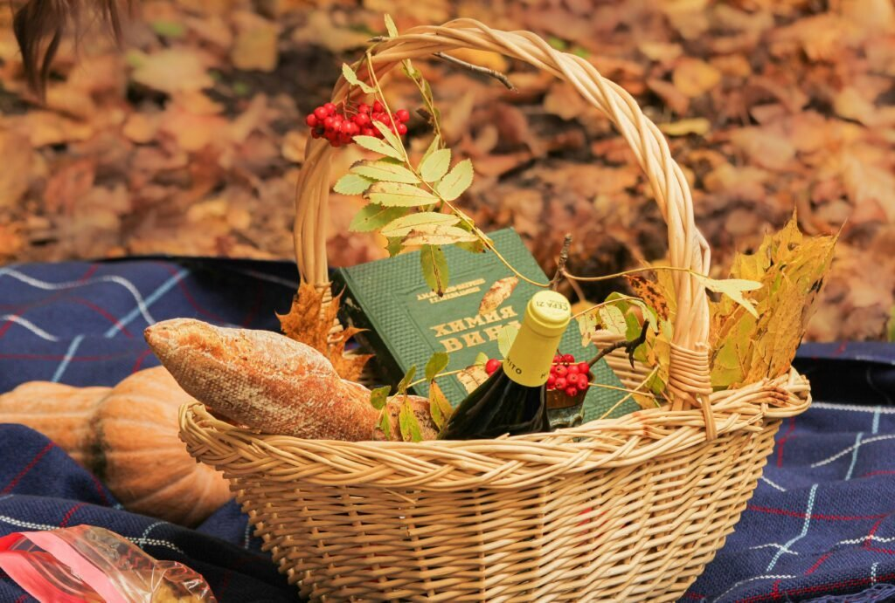
What Every Fall Basket Should Have
A few genuinely useful items, not just decorative filler, make the basket feel valuable rather than purely aesthetic.
Something to eat or drink, something cozy, and at least one small surprise covers most of what makes a basket feel complete.
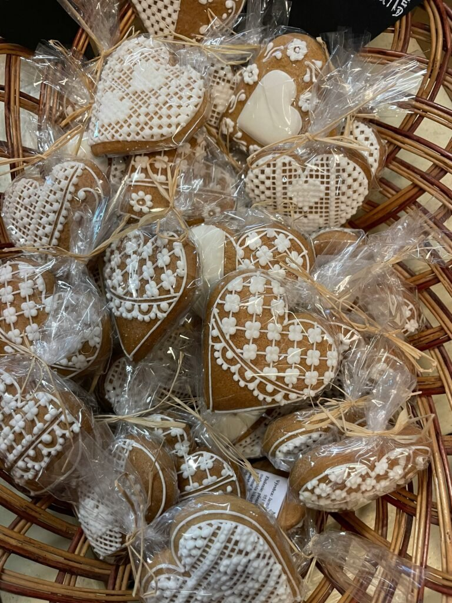
Wonderjune Large Empty Wooden Gift Basket with Bag, Ribbon and Card
Shop on AmazonBrilliantJo Seagrass Belly Baskets with Handles, Set of 2
Shop on Amazon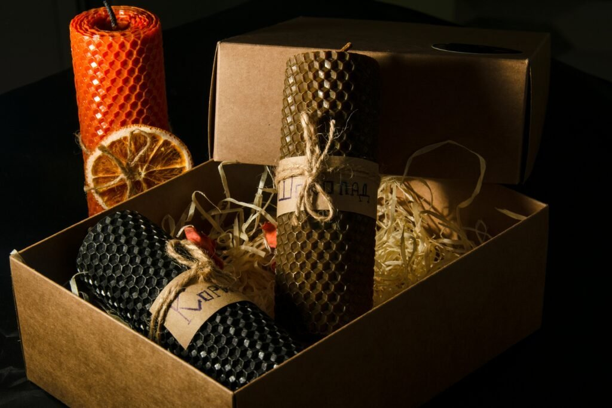
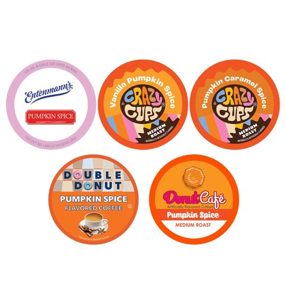
Perfect Samplers Pumpkin Spice Coffee Variety Pack, Medium Roast, 30 Count
Shop on AmazonChoosing the Right Theme
A cozy theme, blankets, candles, warm drinks, works for almost anyone, while a baking or harvest theme leans into the season's flavors specifically.
Picking one clear theme rather than mixing several keeps the finished basket feeling considered instead of like a random grab-bag.
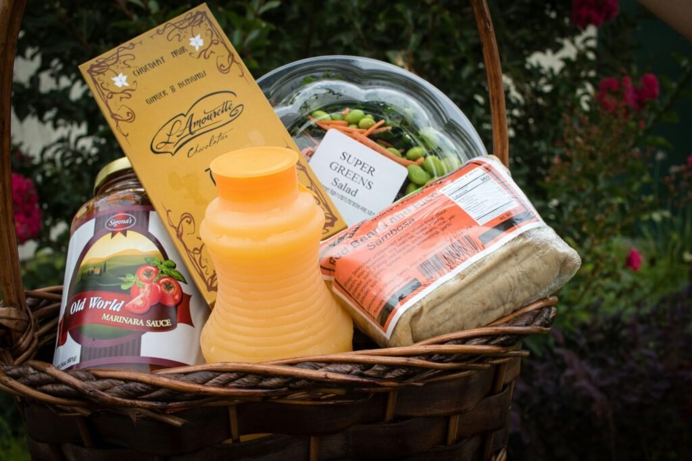
Why a Fall Gift Basket Works So Well
It is flexible enough to suit nearly any relationship or occasion, from a close friend's birthday to a coworker's thank-you, without feeling generic.
It also lets the giver personalize heavily within a loose structure, which is harder to pull off with a single boxed gift.
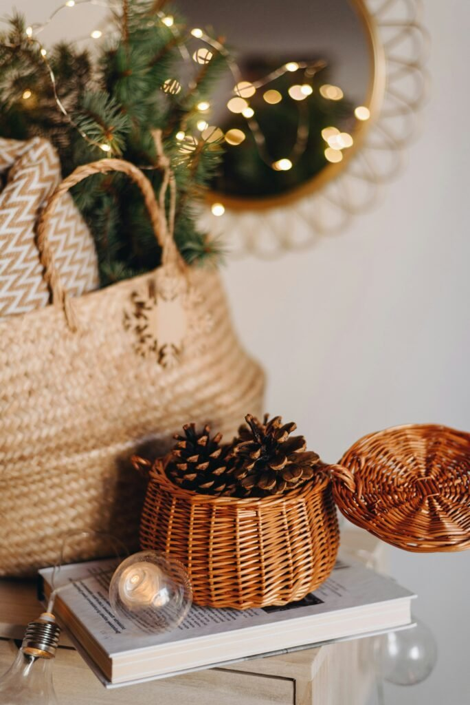
Why Fall Gift Baskets Never Fail
The format is flexible enough to fit nearly any occasion the season brings, from a holiday table to a simple thank-you.
Get the theme and the base items right, and the styling details end up doing the rest of the work.
Start with the occasion, not the shopping list, and the right basket tends to assemble itself from there.